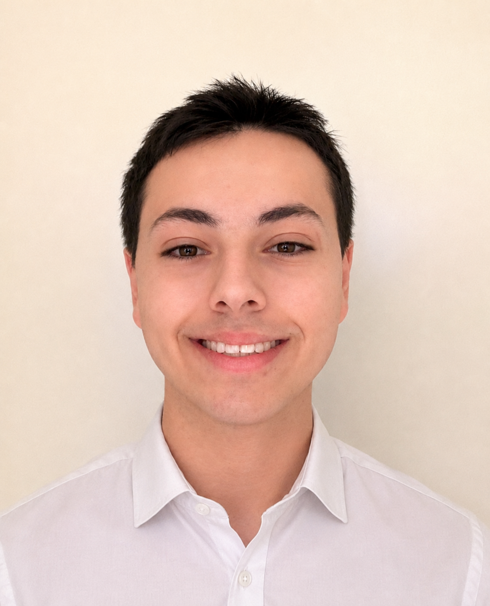

Septembre 2025 - présent
BUT Réseaux et Télécommunications
IUT Clermont Auvergne - Site d'Aubière. Formation orientée réseaux, systèmes, télécoms et cybersécurité.
En savoir plusStage BUT2 recherché à partir d'avril 2027
Étudiant en BUT Réseaux & Télécommunications à l'IUT Clermont Auvergne, orienté systèmes, réseaux et cybersécurité. Je construis un profil technique solide pour évoluer dans des environnements d'infrastructure, de télécommunications et d'administration réseau.


$ profil --objectif
formation: BUT_R&T
axes: systemes/reseaux/cyber
stage: avril_2027Profil
Je suis étudiant en première année de BUT Réseaux & Télécommunications à l'IUT Clermont Auvergne, sur le site d'Aubière. Mon objectif est de progresser vers des missions liées à l'administration systèmes et réseaux, à l'analyse réseau, à la sécurité des infrastructures et aux télécommunications.
Mon parcours m'a amené à travailler avec Linux, Windows, VirtualBox, Wireshark, Packet Tracer, Python et Bash. Je m'intéresse particulièrement aux environnements où il faut comprendre une architecture, diagnostiquer un problème et documenter clairement les actions réalisées.
Je recherche un stage en BUT2 à partir d'avril 2027.


Parcours
IUT Clermont Auvergne - Site d'Aubière. Formation orientée réseaux, systèmes, télécoms et cybersécurité.
En savoir plus
Spécialités mathématiques et NSI, avec bases en algorithmique, Python et web. Baccalauréat obtenu avec mention Bien.
En savoir plus
Parcours en Nouvelle-Calédonie et en Polynésie, avant un retour en métropole pour la terminale.
En savoir plus